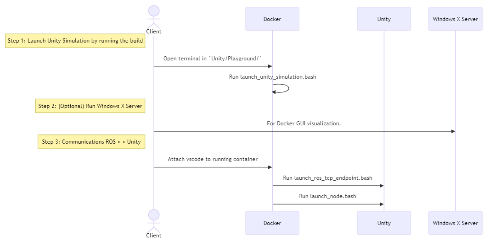
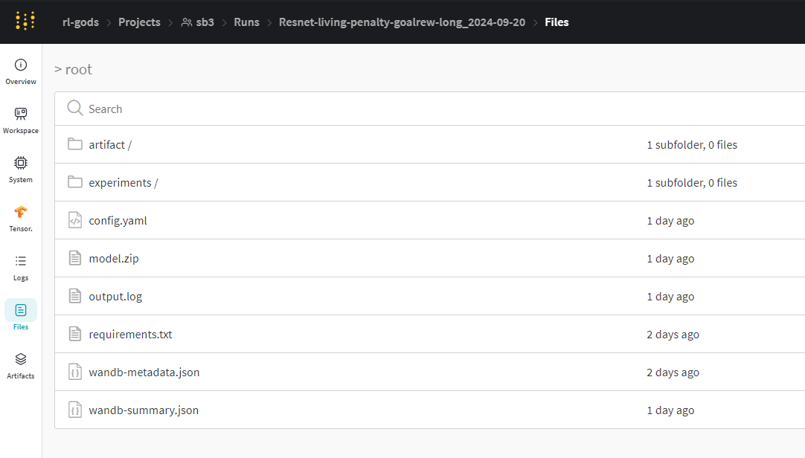

Training
To set up an experiment, modify one of the YAML configuration files in the configs/ directory or create a new one. You can adjust hyperparameters, architecture, and specify a path to a trained model for preloading.
(MISSING) WHERE PATH TO PRETRAINED MODEL??? (MISSING) WHY NEED TO NOT SAY ATARI_GAME?? (MISSING) WHY ONLY RUN 1 EPISODE?
Example configuration file: configs/base_ppo_config.yaml
experiment:
name: 'BipedalWalker-Benchmark'
environment:
id: 'BipedalWalker-v3'
env_config: 'None'
render_mode: 'rgb_array'
monitor: true
video_wrapper: true
video_trigger: 5000
video_length: 500
training:
algorithm: 'ppo'
pretrained_model: 'None'
use_wandb: true
algorithm_parameters:
policy: 'MlpPolicy'
learning_rate: 0.0003
n_steps: 8192
batch_size: 512
n_epochs: 5
gamma: 0.99
gae_lambda: 0.95
clip_range: 0.2
ent_coef: 0.0
vf_coef: 0.5
max_grad_norm: 0.5
architecture:
net_arch: {'pi': [128, 128], 'vf': [128, 128]}
features_extractor_class: 'ResnetMLP'
features_extractor_kwargs:
features_dim: 128
activation_fn: 'ReLU'
share_features_extractor: false
training:
eval:
seed: 5
num_episodes: 5
num_evals: 15
total_timesteps: 500000
device: 'cuda'
log_points: 10
verbose: 2
evaluation:
num_episodes: 1
play:
experiment: 'experiment_date'
pretrained_model: 'model'
Adding Custom Models
To use a custom architecture, add your PyTorch model class to the rl_pipeline/models/feature_extractors directory. Your model should inherit from the base extractor class provided in rl_pipeline/models/feature_extractors/base_extractor.
# rl_pipeline/models/custom_cnn.py
import torch
from rl_pipeline.models.feature_extractors.base_extractor import BaseFeaturesExtractor
class CustomCNN(BaseFeaturesExtractor):
def __init__(self, observation_space, features_dim=256):
super(CustomCNN, self).__init__(observation_space, features_dim)
# Define your custom layers here
def forward(self, observations):
# Implement forward pass
return features
Also, in rl_pipeline/configs directory the configuration should be updated to say that we use our custom model.
architecture:
features_extractor_class: 'CustomCNN'
features_extractor_kwargs:
features_dim: 256
Running Training
To run an experiment, follow the steps mentioned in the main readme:
Define the simulation parameters in the
config.ymlfile:(MISSING) NOT IN CURRENT config.yml:
ros: package_name: "examples_pkg" node_name: "train"
When running the environment as a Unity standalone build, other parameters such as the number of parallel environments, the time scale, pause, and headless mode flags can be modified:
n_environments: 1 ros: package_name: "examples_pkg" node_name: "train" unity: build_path: "build/Playground.exe" headless_mode: false pause: false sample_time: 0.0 time_scale: 1.0
Launch the Unity simulation:
launch_unity_simulation.bat
In Visual Studio Code attached to the running container, open two new terminals and run the following commands:
bash launch_ros_tcp_endpoint.bash bash launch_node.bash
The
launch_node.bashfile launches the package and node specified in the configuration.
Loading Models
(MISSING) EXAMPLE:
In the config file, fill the play section with the name of the experiment and the model. Ensure the model and experiment folder follow the specified structure.
You can also download models from the Weights & Biases page under the /files section.
(MISSING) EXAMPLE:
Other Environments
You can also run experiments on other gymnasium environments by running the train_example.py script with your configuration:
(MISSING) WHERE SCRIPT???:
python train_example.py --config configs/base_ppo_config.yaml